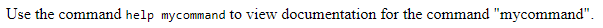

O elemento HTML < kbd > representa um período de texto digitado denotando a entrada textual do usuário de um teclado, entrada de voz ou qualquer outro dispositivo de entrada de texto. Por convenção, o agente do usuário não concorda em tornar o conteúdo de um elemento usando sua fonte monoespaciais padrão, embora isso não seja exigido pelo padrão HTML.< kbd >
